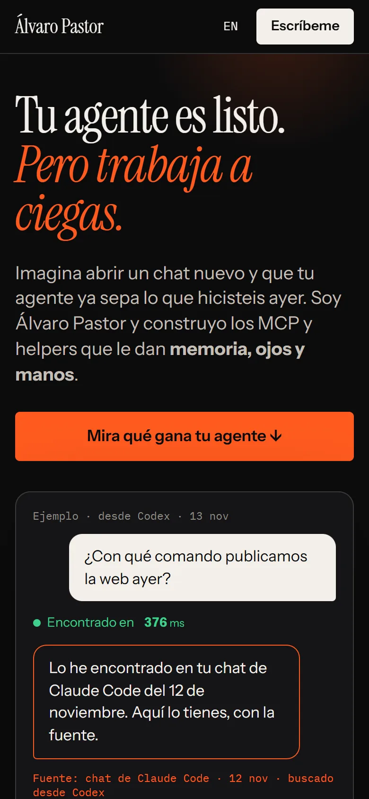

Beneficio antes que cifras.
De «5 servidores MCP» a «imagina abrir un chat nuevo y que tu agente ya sepa lo que hicisteis ayer».
Empieza aquí · Mi propia portada · 14 nov 2026
Construyo herramientas que dan memoria a los agentes de IA. Mi web enseñaba cifras sobre ellas. Quien entraba no sabía qué ganaba. Así lo cambié en una sola sesión, y lo que todavía no puedo demostrar.
I · La noche que lo vi
13 de noviembre, por la noche. Acababa de publicar Agent History Search, la herramienta que deja a tu agente recuperar lo que hiciste en chats anteriores. Abrí mi portada como si fuera otra persona.
Un titular grande. Después, cuatro cifras: 5 servidores MCP, 20 skills, 6 agentes, 0,1 s. Dos botones juntos. Todo cierto. Nada respondía a la única pregunta que trae quien entra: ¿qué hace esto por mí?
II · Antes y después

 Antes
Después
Antes
Después


Capturas reales de la web publicada, tomadas minutos antes y después de publicar, con el mismo navegador y tamaños de ventana (1440 × 900 y 390 × 844).
III · Cómo lo hice
Describir una web con palabras es lento: «la segunda tarjeta, el botón de debajo del título, no, el otro». Así que usé un selector que construí para mí. Hago clic en la parte de la página que no me gusta, escribo en una frase lo que quiero y pulso Enviar. Mi agente recibe el elemento exacto y cambia el código.
IV · Cuatro decisiones
De «5 servidores MCP» a «imagina abrir un chat nuevo y que tu agente ya sepa lo que hicisteis ayer».
Un ejemplo real que reproduce la búsqueda con su tiempo medido: 376 ms. Ves qué esperar antes de leer nada más.
Dos botones que competían pasaron a uno: «Mira qué gana tu agente ↓». Invita a bajar y dice para qué.
«Memoria, ojos y manos» en vez de etiquetas técnicas. «Menos de medio segundo» en vez de «226 ms encontrarlo, 150 ms ampliarlo».
V · Lo que no demuestra
La portada nueva cambia el orden en el que descubres lo que hago: primero qué ganas, después un ejemplo real, luego cómo funciona y por qué puedes fiarte. Todavía no demuestra que más gente pruebe la herramienta o me escriba.
El siguiente paso es comparar, con tráfico parecido, cuántos visitantes llegan a la página de la herramienta y cuántos empiezan la conversación. Cuando tenga los números los publicaré aquí, aunque el cambio apenas mueva nada.
Pruébalo con tu web
Dale cinco segundos. Después hazle estas tres preguntas sin explicar nada:
Si una cifra de tu portada necesita que estés al lado para explicarla, te habla a ti, no a quien entra. Guarda las preguntas y pásaselas a quien revise tu web contigo.
Ahora, tu web
Pásame la página y cuéntame qué quieres que haga quien entra. Podemos empezar por lo que necesita entender antes de su primer clic.
Cuéntamelo por X ↗